每次打开都一样
湖、环山、木屋、石拱桥、果园和湿地，位置是固定的。没有任务，也没有目标，想走哪走哪。
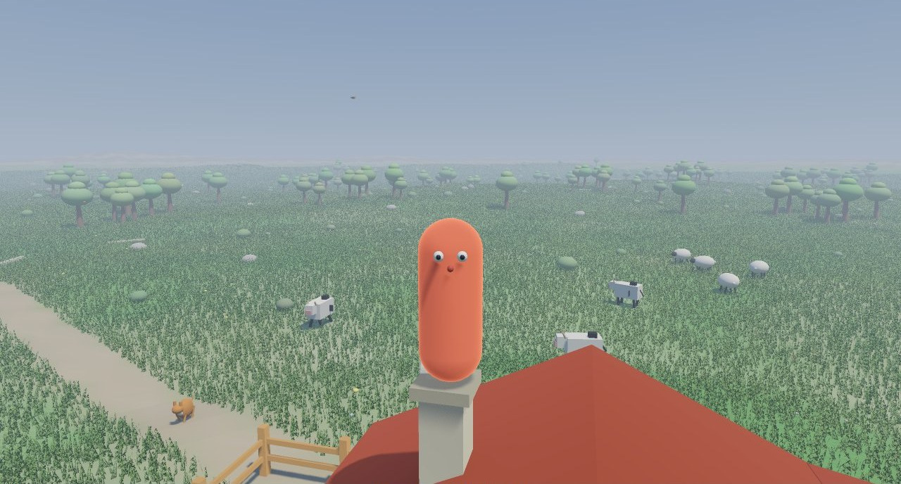
湖、环山、木屋、石拱桥、果园和湿地，位置是固定的。没有任务，也没有目标，想走哪走哪。
四分钟过完一天。太阳落下月亮升起，夜里能看见星星，月亮八天圆缺一轮。
晴、多云、小雨、大雨、下雪，说变就变。下雨时鸟不叫了，兔子躲回窝，蝴蝶落进草丛。
天冷了湖水从岸边开始冻，冰面慢慢推向湖心。雪先落在低处，再一层层盖上山坡、树冠和蘑菇顶。
推门、开窗、开木箱、在井边打水、采浆果。走近了会浮出提示，按 E 就行。
草地、雪地、雨天的泥地、石桥上，走过去的声音都不一样。摘到浆果会“啵”一声。
画面
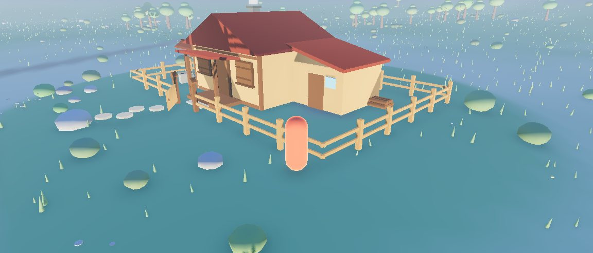
木屋、栅栏、院子和门口那条小路。
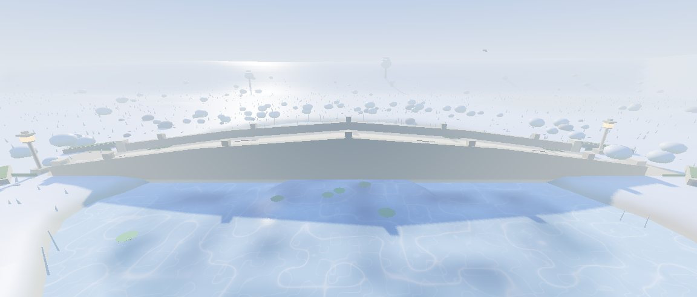
雪
石桥、栏杆和湖面都盖了一层雪，湖水在下面结着冰。
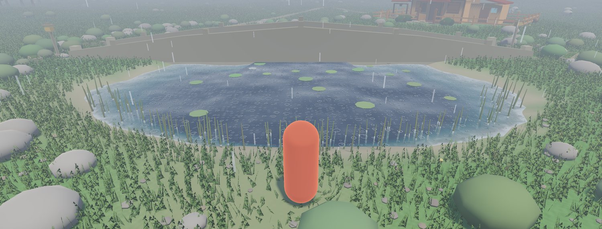
水
湖面有波浪，能看见水下的深浅，也能看见天空的倒影。下雨时泛起涟漪，天冷了慢慢结冰。
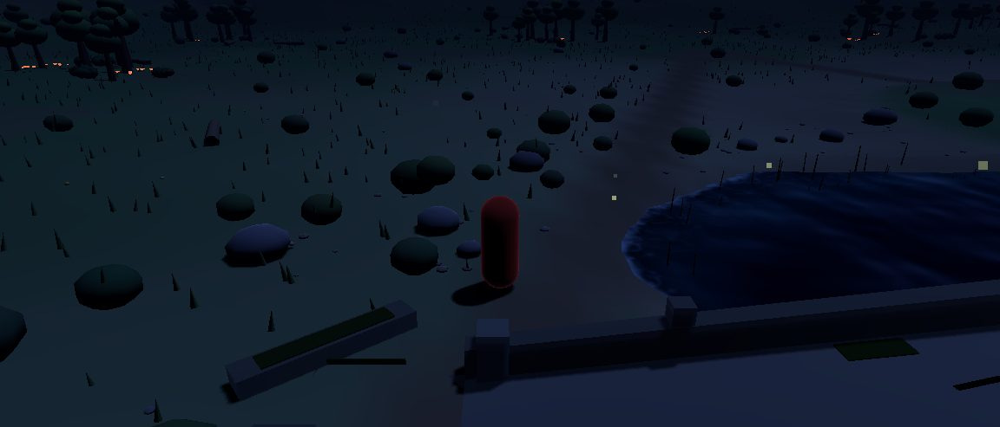
夜
月亮升起来，萤火虫只在晴夜出现，蘑菇会发光，鸟不叫了。晴天抬头能看到星星。
截图
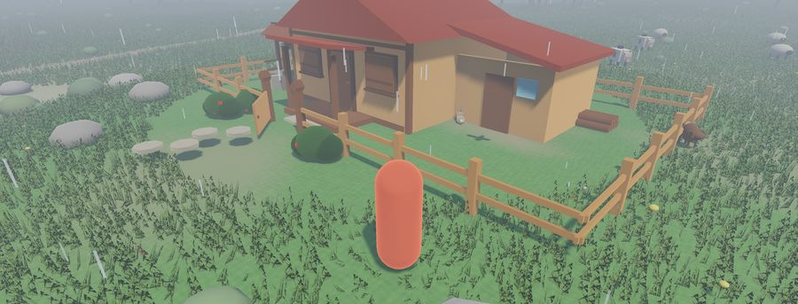
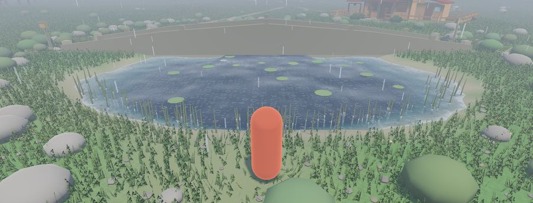
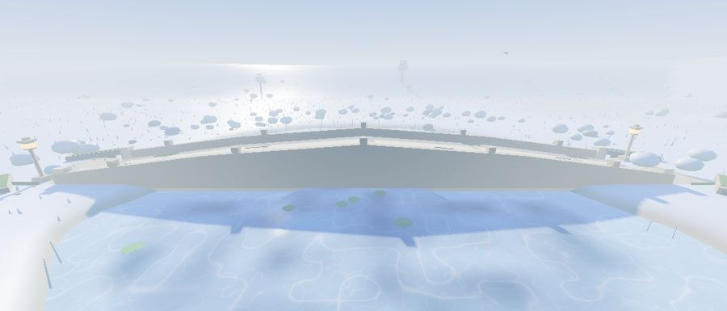
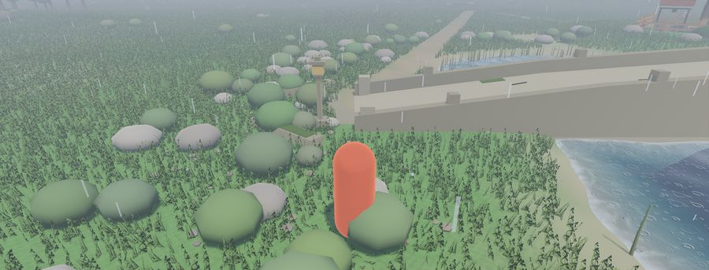
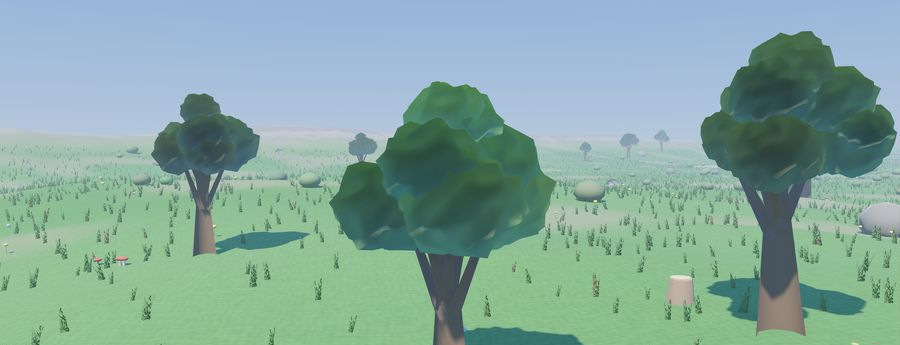
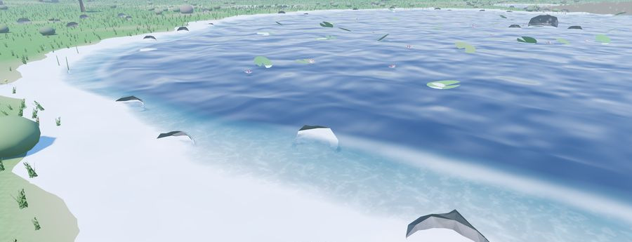
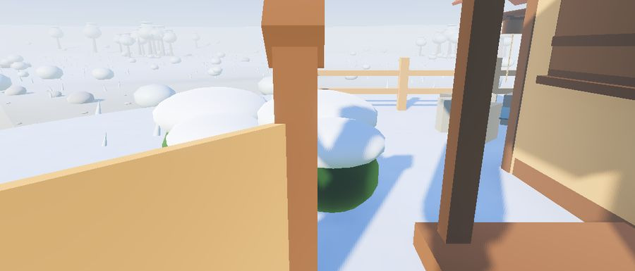
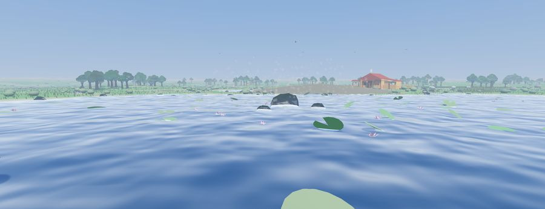
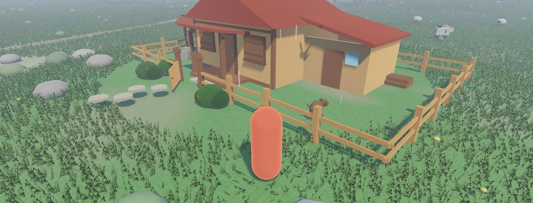
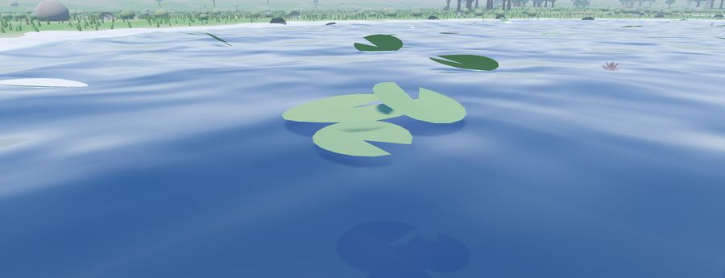
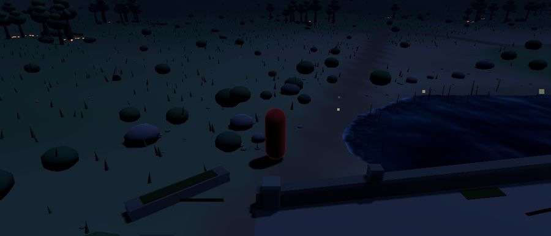
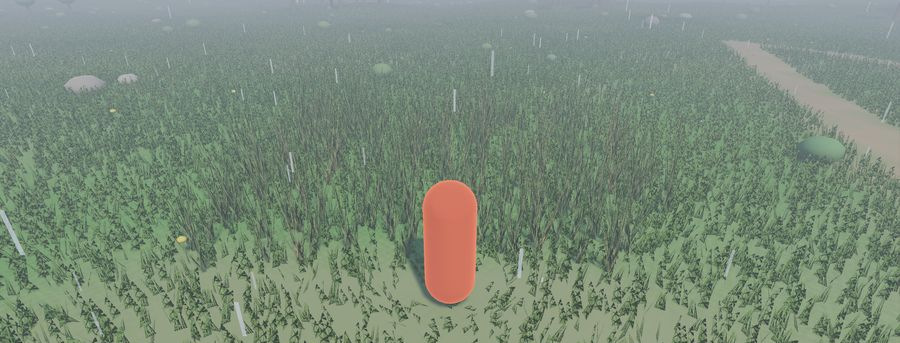
下载
当前版本 v0.1.0，2026-10-01 构建。Windows 与 macOS 为绿色免安装包，Linux 提供 deb 安装包。
game3d-macos.zip74 MB
macOS 11 及以上，Apple Silicon 与 Intel 通用。解压后把 湖畔家园 Homestead.app 拖进「应用程序」即可。
下载 macOS 版未签名，首次打开请右键 → 打开；或终端执行 xattr -cr "湖畔家园 Homestead.app"
game3d-windows-x64.zip52 MB
Windows 10 / 11 64 位。解压到任意目录，双击 game3d.exe 运行。需要支持 Vulkan 的显卡。
下载 Windows 版未签名，SmartScreen 可能提示，选「更多信息 → 仍要运行」。
game3d-linux-amd64.deb34 MB
Debian / Ubuntu amd64。安装后从应用菜单启动，或终端运行 lakeside-cabin。
下载 Linux 版安装：sudo dpkg -i game3d-linux-amd64.deb，缺依赖时补 sudo apt -f install
运行要求
近几年的集成显卡基本都能跑。需要显卡支持 Vulkan 1.0，2016 年之后的机器一般都没问题。